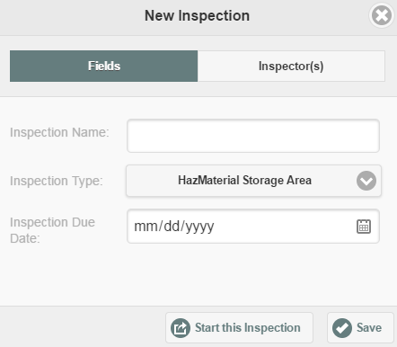
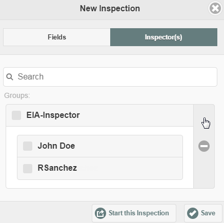
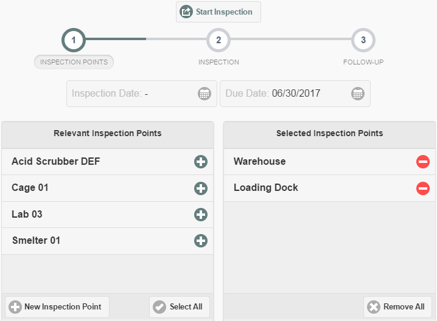
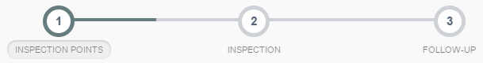

If you will be conducting a field inspection offline, you will need to create the inspection first with an online connection. Once the inspection has been created, it can be completed offline. Corrective actions may also be created offline. Once connection is restored, you can sync all inspection data with the online database.
To create an inspection:
Select a facility from the sidebar on the left.
If the facility sidebar is not displayed select the sidebar button to display it.
After selecting the facility, click New Inspection.
In the New Inspection dialog, enter a name for the inspection.

Select an Inspection Type from the dropdown list.
The Inspection types applicable to the Inspection Points in that facility will be shown.
Select the due date from the calendar.
This is the date that the inspection task is to be completed. The task will appear on the calendar on this date. If you intend to complete the inspection yourself immediately, use today's date. If you intend to assign the inspection task to someone else for future completion, use the date it is required to be completed.
Select the Inspector(s) tab to assign to one or more inspectors.
You can assign to a group, to a single individual within a group, or to more than one individual.
To choose an individual from a group, click the plus sign (+) to show users.
You can also search for an individual by name by entering text in the search box. Matches will be displayed for your selection.

If you clicked Start this Inspection, the inspection setup page is displayed. On this page you will select the Inspection Points to include in the inspection. By default, all objects associated with the selected facility and inspection type are selected.
Click the - button to remove any you do not want to include. Or click Remove All, then select only those items you want.
Click the + button to add Inspection Points for the inspection.
Click New Inspection Point if you want to create new objects for inspection. See Create New Inspection Points for more information.

Note that the Progress bar shows that you are at Step 1 in the inspection process. If you start the inspection and need to add more inspection points later, you can return to this step to do so.

Select the Inspection Date field and choose a date from the calendar. If you do not enter a date, today's date will be offered by default when you click Start Inspection.
The Inspection Date is the date that the inspection is performed. The Due Date is the date it is required to be completed, as it appears on the calendar.
The Inspection Date is associated with the inspection workflow. The Due Date that you entered previously is associated with the inspection task that appears on the calendar.
Click Start Inspection.
If you did not enter an inspection date, a warning dialog will be displayed. You can click to Use Today's Date, or cancel and enter a date.
The inspection form will be generated to include a section for each Inspection Point you selected. The next step is to complete the inspection.
The inspection will be automatically cached for completing offline.